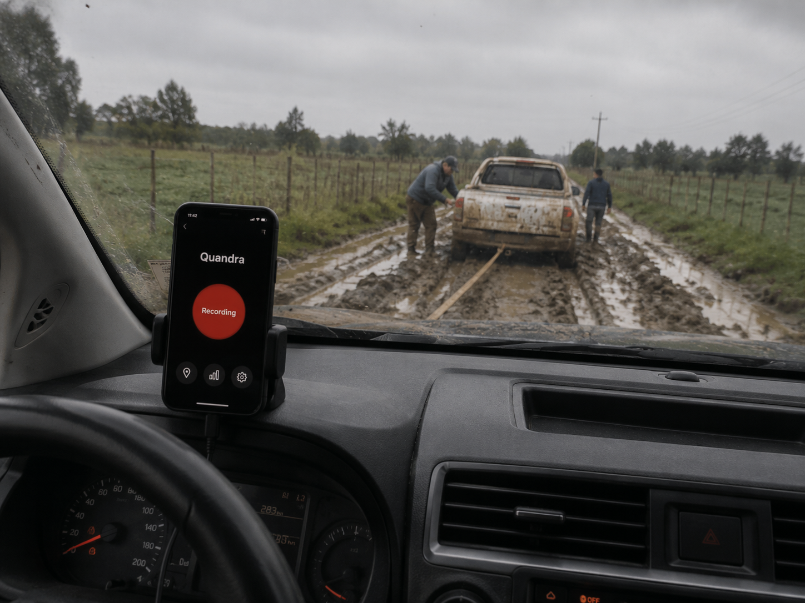
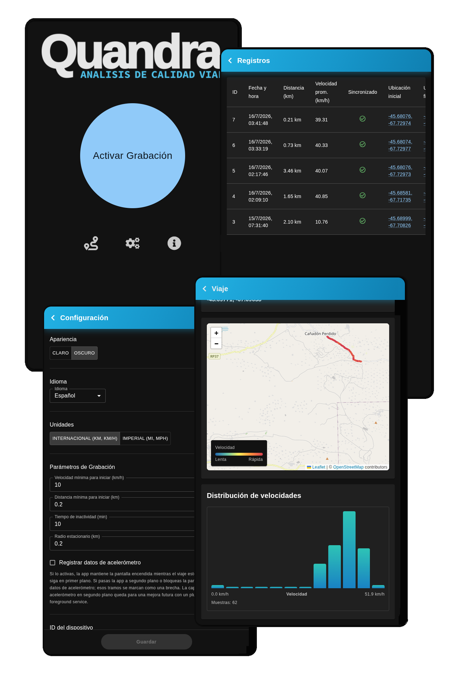
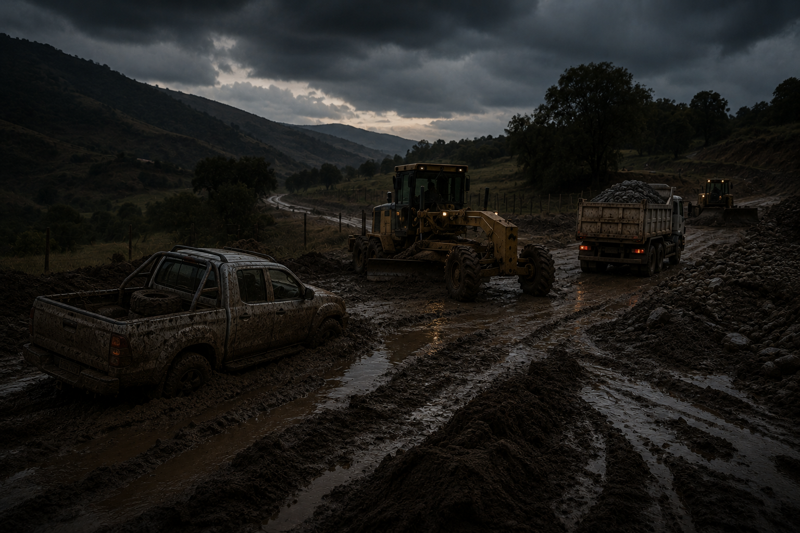
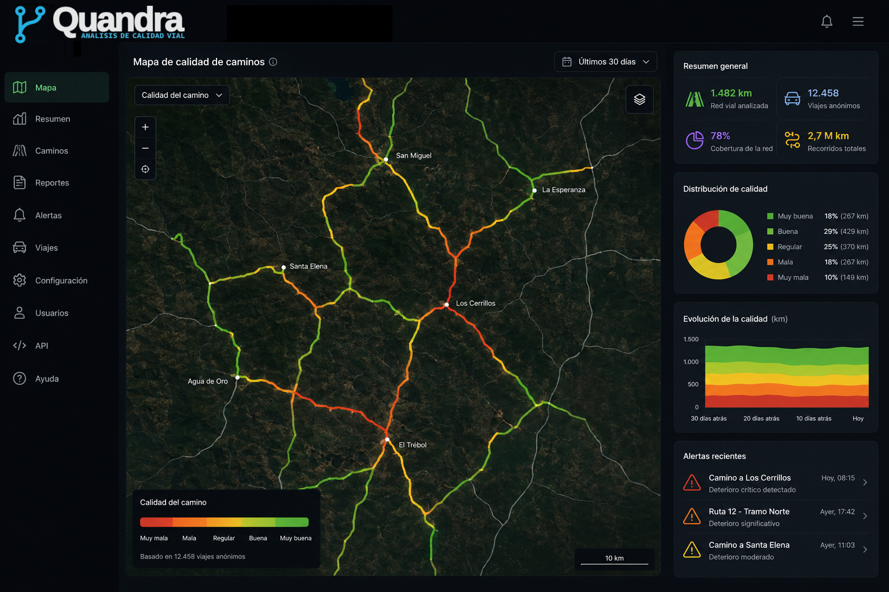
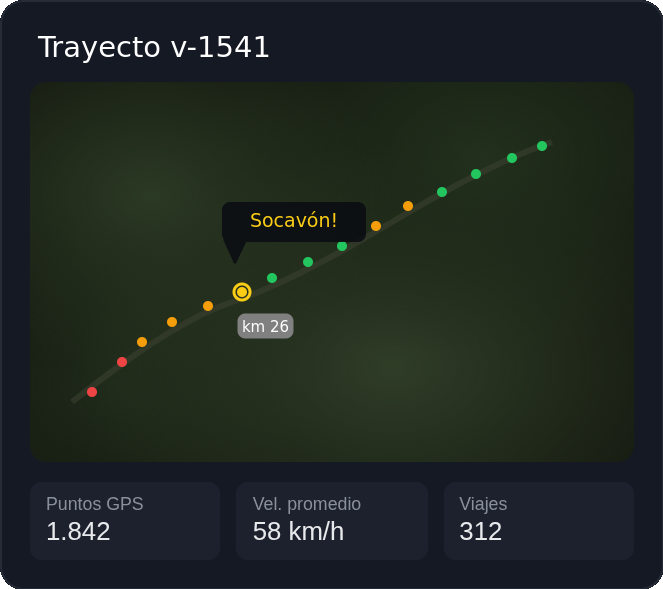
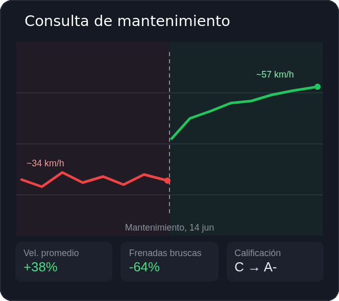

Monitoreo inteligente de caminos rurales
Quandra convierte el recorrido diario de vehículos en un mapa de calidad vial permanente y objetivo. Visualizá en tiempo real qué tramo se deterioró, cuándo empezó y cuánto mejoró después de la obra — sin esperar el próximo reclamo.
Las decisiones comienzan con información confiable
Gestionar extensas redes de caminos urbanos, de tierra o ripio con recursos limitados requiere priorización. Los métodos tradicionales ya no son suficientes.
Relevamientos costosos
Los relevamientos visuales (patrullajes) consumen mucho tiempo, combustible y personal. Es imposible recorrer toda la red con la frecuencia necesaria.
Decisiones basadas en reclamos
Depender exclusivamente de las quejas o reclamos de los vecinos significa que el municipio siempre reacciona cuando el problema ya es severo e intransitable.
Mantenimiento poco eficiente
El mal estado de los caminos secundarios rompe vehículos, frena la logística rural, aísla comunidades y genera pérdidas millonarias en producción.

Beneficios para su organización
Quandra convierte los recorridos diarios de vehículos en información útil para planificar el mantenimiento vial, optimizar recursos y tomar decisiones respaldadas por datos.
Cobertura continua
Monitoree cientos de kilómetros de caminos aprovechando los recorridos habituales de la flota y otros vehículos colaboradores.
Priorización objetiva
Identifique rápidamente los sectores con mayor deterioro y destine los recursos donde realmente generan mayor impacto.
Menos inspecciones
Reduzca el tiempo destinado a relevamientos manuales y complemente las inspecciones presenciales con información automática.
Decisiones con evidencia
Evalúe la evolución de cada camino antes y después de una intervención para medir resultados y justificar inversiones.
Colaboración inteligente
Nuestra solución se basa en una red colaborativa. La aplicación funciona con cualquier tipo de vehículo—auto, camioneta, camión, colectivo, tractor o maquinaria pesada. Sin necesidad de instalar costosos sensores de hardware dedicados.
Recolección Pasiva
La app detecta automáticamente el inicio y fin de cada viaje, registra tu ruta en segundo plano y sincroniza los datos. Funciona offline: guarda los viajes localmente y los sincroniza al recuperar la señal.
KPIs de Calidad Vial
Nuestro motor en la nube analiza automáticamente el registro de movimiento de cada viaje. Al cruzar miles de datos de comportamiento de manejo, el sistema pinta mágicamente de rojo a verde qué tramos están deteriorados y cuáles en buen estado.
Tablero de Control
La organización de mantenimiento accede a un mapa en tiempo real que consolida toda la información, permitiendo planificar las obras de perfilado o bacheo basándose en evidencia dura.


Priorice las intervenciones con evidencia
Identifique rápidamente los sectores críticos. Nuestro mapa de calor traduce millones de puntos de datos en información clara y procesable para la toma de decisiones.

Evidencia georreferenciada
Complementa la recolección automática con cualificaciones visuales. Los ciudadanos y transportistas pueden colocar marcadores en el mapa con fotografías precisas de baches, árboles caídos o cortes, nutriendo tu tablero con evidencia concreta de los incidentes.

Mida el impacto del mantenimiento
Quandra retiene el historial de tu red. Compara la calidad de un camino antes y después de una intervención de mantenimiento, o evalúa cómo se degrada la superficie tras la temporada de lluvias o la cosecha gruesa.

Instituciones que innovan con Quandra
Solicite una demostración personalizada
Descubra cómo Quandra puede ayudarle a priorizar el mantenimiento, optimizar recursos y conocer el estado de toda su red vial desde una única plataforma.
- Tablero de control completo
- App para flota municipal
- Soporte técnico especializado